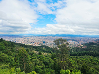
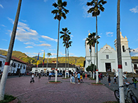
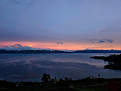
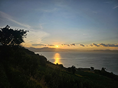
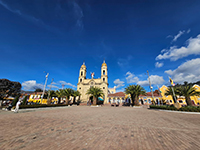
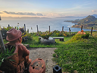

Sobre mí
Soy estudiante de Diseño Gráfico con enfoque en comunicación publicitaria, orientado a la creación de soluciones visuales estratégicas que conectan marcas con sus audiencias.
Cuento con formación y experiencia técnica en producción fotográfica, edición de video y desarrollo web, lo que me permite abordar proyectos de manera integral, desde la conceptualización hasta la ejecución final en distintos formatos digitales.
Mi metodología se basa en la escucha activa, la investigación y el análisis de las necesidades del usuario y del contexto, con el objetivo de transformar ideas en propuestas creativas funcionales, coherentes y de alto impacto visual.
Me interesa desarrollar piezas que no solo destaquen por su estética, sino que también comuniquen de forma efectiva, generen valor y aporten a la identidad de cada proyecto.
Algunas de mis Fotografias





